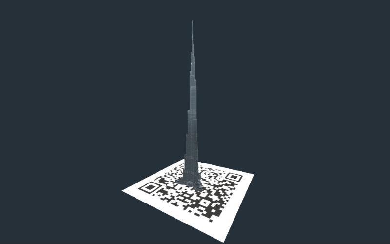

AR Burj Khalifa
Scan a QR code and a scale model of the Burj Khalifa appears standing on it, with narration in 10 languages. On a phone you can also place a 1.5 m version in your room.
MindARA-FrameAR Quick Look
3D model: Burj Khalifa Dubai by SDC PERFORMANCE, CC BY 4.0